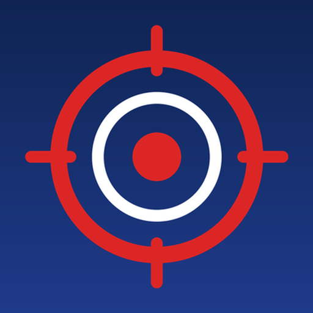

Tuzak Avcısı: LGS Matematik
8. sınıf öğrencileri için LGS matematik antrenmanı. Tuzak Avcısı, matematik sorularında puan kaybettiren tuzakları — işaret hatası, dağıtmayı unutmak, mertebe kaydırmak, "toplam mı çarpım mı" karışıklığı — tanımayı çalıştırır. Ücretsizdir; reklam, hesap ve veri toplama yoktur; indirdikten sonra internet olmadan çalışır.
Nasıl çalışır?
İki hat iç içe ilerler:
- Akıcılık — çarpan, üs, kök, özdeşlik, benzerlik gibi temel işlemleri doğru ve otomatik yapmayı pekiştirir; sürükle-bırak, çoktan seçmeli ve yazarak cevap katmanlarıyla, hız baskısı olmadan.
- Tuzağı görme — aynı konunun tuzaklı hâlini tanıtır. Birçok konuda yanlış şık seçildiğinde, o şıkkın hangi hatadan geldiğini anlatan bir tuzak kartı açılır.
İçinde ne var?
- 8. sınıf matematiğinin konu başlıkları: Çarpanlar ve Katlar, Üslü İfadeler, Kareköklü İfadeler, Cebirsel İfadeler ve Özdeşlikler, Doğrusal Denklemler, Eşitsizlikler, Üçgenler, Dönüşüm Geometrisi, Eşlik ve Benzerlik, Geometrik Cisimler, Veri Analizi, Olasılık.
- 43 alıştırma modu; konuya göre bir ila üç katman.
- Sorular her oturumda yeniden üretilir: sayılar, şıklar ve çeldiriciler değişir.
- LGS Denemesi: 20 soru, süreli, net = doğru − yanlış ÷ 3, tuzak analizli karne.
- Beceri Sınavı: öğrenilenin yeni soru tipine taşınıp taşınmadığını ölçer.
- Zorluk doğruluğa göre ayarlanır.
Veliler için
- Reklam yok. Uygulama içi satın alma yok.
- Hesap açılmaz; isim, e-posta, konum istenmez. Veri toplanmaz.
- Uygulamanın internet izni yoktur; indirdikten sonra tamamen çevrimdışı çalışır.
- İlerleme yalnız cihazda saklanır; istenirse hesapsız yedek metni alınıp geri yüklenebilir.
- Alıştırmalarda ceza puanı, can kaybı ve geri sayım yoktur. İlerleme başkasıyla değil, öğrencinin kendi geçmişiyle karşılaştırılır.
Sık sorulan sorular
Tuzak Avcısı ücretli mi?
Hayır. Uygulama ücretsizdir; reklam ve uygulama içi satın alma yoktur.
İnternet gerekir mi?
Hayır. Uygulamanın internet izni yoktur; Google Play'den indirdikten sonra internet olmadan çalışır.
Hangi telefonlarda çalışır?
Android 6.0 ve üzeri sürümlerde. Yeni yükleme boyutu yaklaşık 3 MB'tır.
Çocuğumun verileri toplanıyor mu?
Hayır. Hesap açılmaz, isim veya e-posta istenmez; uygulama veri toplamaz ve üçüncü taraflarla paylaşmaz. Ayrıntılar gizlilik politikasında.
Sorular gerçek LGS soruları mı?
Hayır. Sorular MEB 8. sınıf kazanımları esas alınarak bu uygulama için üretilir; gerçek sınav sorusu kullanılmaz.
Uygulama MEB'e mi ait?
Hayır. Tuzak Avcısı bağımsız bir çalışmadır; Millî Eğitim Bakanlığı ile resmî bir bağlantısı, ortaklığı veya onayı yoktur.
iPhone sürümü var mı?
Şu an yalnız Android (Google Play) sürümü vardır.
Uygulamanın eski adı neydi?
Uygulama geliştirme sürecinde "Tuzak Avcısı — Antrenman" adıyla anıldı; mağazadaki adı "Tuzak Avcısı: LGS Matematik"tir.
Dürüst sınır
Tuzak Avcısı bir sınav sonucu vaat etmez. Yaptığı şey, tuzağı tanıyan bir göz kazandırmak ve temel işlemleri otomatikleştirmektir. Gerisi çalışmaya bağlıdır.